茶友您好，来到这里就是缘分。
我知道您喜欢紫砂壶，也在四处寻觅一把真正的紫砂壶！
我叫周美芳，国家高级工艺美术师，少年时师从江苏省工艺美术大师、著名紫砂艺术家周尊严；后师从高级工艺美术大师江建祥，是许承权大师、汪寅仙大师徒孙，我学制壶时，刻苦钻研，深得各老师制壶真传。
我可以让您学习真正紫砂知识，避免上当受骗！
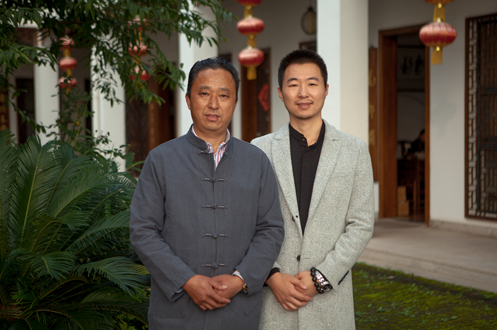
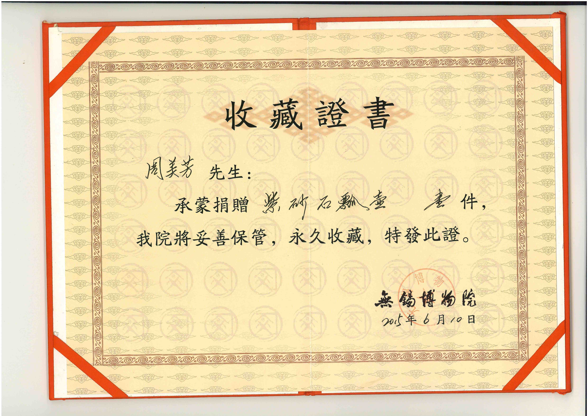
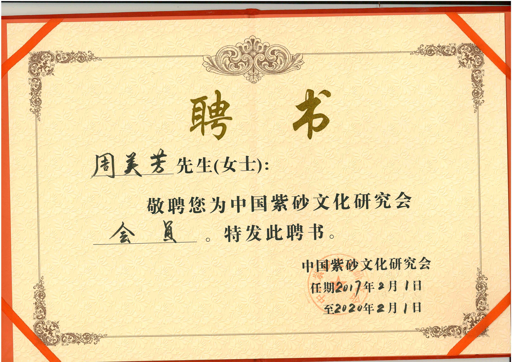
关于紫砂壶，您肯定关心这些问题：
1.如何买到正宗宜兴紫砂壶？如何识别假壶（如化工壶）？
2.紫砂壶价格从几十元到几万元不等，如何辨别泥料好坏？
3.新手买什么样的紫砂壶比较好？
4.紫砂壶如何开壶养壶？
5.如何进一步买到并收藏自己喜欢的紫砂壶？
本文聊稍微有点长，如果你想快速了解我们宜兴紫砂壶，不妨花几分钟耐心看完！
我叫周美芳（微信号：zhmj42）。1968年生于中国陶都----江苏宜兴，是江苏省工艺美术大师，现任宜兴陶源紫砂研究所艺术总监。16岁拜师学艺，师傅是高级工艺美术大师江建翔，是许承权大师、汪寅仙大师徒孙。长期从事紫砂壶艺创作，在学会传统器型制作后，学习制作方器师从著名紫砂艺术家，研究员级高级工艺美术大师周尊严老师，是周尊严老师得意门生。本人属韧性性格，刻苦钻研，扬长避短，专攻壶型，做工，专业制壶长达30多年，对壶艺之道颇有心得，制作出的作品工艺精良，古朴大方，形成了自己独特的风格，所制作品得众多名家和收藏家的亲睐。
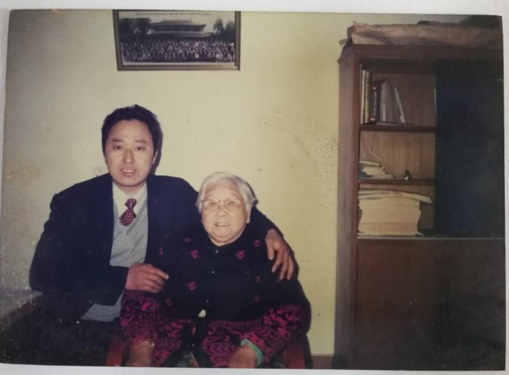
我是一个手艺人，大半辈子也只懂得做壶，网上这些信息都是徒弟助理帮忙做的，如今我每日就是坚持做壶，发扬好这项紫砂文化.
做壶数十年，遇到新壶友提出的各种各样的问题，所以有必要科普下真正的宜兴原矿紫砂壶。通过对一些常见的问题的总结回答，让大家都能真正，快速的了解紫砂壶，入门紫砂壶，尽量避免大家走弯路，在买壶的过程中上当受骗。本意是用自己所了解和积累的知识帮助大家去疑解惑，若存在不严谨的言辞和观点，欢迎各位加微信zhmj42指正和讨论。
对于紫砂壶，我们先简单介绍一下，什么是紫砂壶？为什么喝茶要喝紫砂壶？如何买到正宗宜兴紫砂壶？如何识别假壶（如化工壶）？
谈壶必谈茶，中国古代就有出门七件事：柴米油盐酱醋茶，其中的茶，在远古时代就有神农辨药尝百草得茶以解毒的故事，我们伟大领袖毛主席在饮食方面也是要求粗茶淡饭，而且喜欢边喝茶，边看报，对茶的要求是要浓，要热。自神农氏开始，一直以来，喝茶是生活常态，自古至今，喝茶的器具也是千姿百态，直至明代正德嘉靖年间，宜兴进士吴颐山的家僮供春出现，吴颐山读书于金沙寺中，供春利用侍候主人的空隙时间，学金沙寺老僧制壶。所制紫砂茶具，新颖精巧，温雅天然，质薄而坚，负有盛名。当时制成的树瘿壶，世称“供春壶”，令寺僧叹服，后供春以制紫砂壶为业。此壶现藏于北京的国家历史博物馆。
自明以后，紫砂壶一直传承有序，无数陶工、艺人为紫砂壶的发展做出了贡献，期间名家大师辈出，各领风骚数百年。经过几百年的发展，紫砂壶从实用性的喝茶工具，经文人墨客，已经是实用性，艺术性，收藏为一体的综合性实用观赏型“古董”。下面我就为大家介绍一下紫砂壶： 紫砂壶，首先我要提的就是泥料的问题。
紫砂壶之所以叫紫砂壶，是因为他的泥料用的是紫砂泥，那紫砂泥有什么独特的属性呢？紫砂泥是江苏宜兴得天独厚的原料（全世界目前看只有宜兴有紫砂泥），它在成份上俱备了制陶所必须的化学组成及矿物组成。从显微镜观察，紫泥主要矿物为石英、粘土、云母和赤铁矿。它合理的化学、矿物、颗粒组成，使紫泥俱备了可塑性好、生坯强度高、干燥收缩小等良好的工艺性能。紫泥粉碎的细度，以过60目筛为宜。所以泥料是一把壶的根基，泥料不对，再好的手艺都是白搭！！甚至，害人不浅！（大家一定听过合成泥和化工泥吧？）
前几年，政府将紫砂壶列为世界非物质文化遗产，政府因此将紫砂泥也进行了监管，并制定了相关条例。简单来说，就是为了不允许过渡开采，甚至关停了很多矿源开采点。由于我早年制壶需要家里购了大量紫砂原料，继承了大量老一辈留下来的紫砂存量，目前家里后山有个厂房，储存着存了很多珍贵的泥料。从风化到加工泥块，每一个步骤我都会亲历亲为，监督指导。（每周我都会到厂房好几次，亲自督促工人加工泥料，从根源掌控品质。一定要亲自来跑跑，这样我自己制壶过程心里更有底。） 那喝茶为什么要用紫砂壶呢？
正因为紫砂壶的泥料特效，所以用紫砂泥料制作的紫砂壶，具有双气孔透气特性，用紫砂壶泡茶时壶身透气而不漏水，泡茶后壶有余香，隔夜茶也不会馊，时间长了，紫砂泥料还会出胞浆，壶身越泡越亮，深得紫砂爱好者喜爱。但是如果用的泥料不是紫砂泥料，就不具备以上特性，就失去了紫砂壶的属性。物以稀为贵，因为紫砂壶的稀有性，所以购一把正宗紫砂壶价不菲，这个时候，就有贪图利润的商贩用假的紫砂泥料，用制假工艺，以假乱真，用低价成本的制作，模仿紫砂壶，让喜爱紫砂壶的壶友用高价格买了一把不是真正的紫砂壶，导致一把正宗的紫砂壶一壶难求。我知道此帖一出会得罪很多壶商，特别是某宝上某些不良壶商，但是为了壶友了解紫砂壶----值得啊！也体现我传承紫砂文化的决心！
化工壶：人工添加化工原料，如：氧化猛、氧化铅、等各种有害物质，造出的壶，非紫砂泥，价格极便宜。
调配壶：原矿泥调配砂土，对人没有危害。但成品壶没有什么收藏价值，失去了紫砂泥双气孔透气特性。低端假冒的紫砂壶，由于泥料不正，非但不能养生保健，反而危害身体健康，建议入口的东西，一定要选> 择天然的紫砂壶，身体健康无价！
（每一把壶我都会配一个手写证书，因为我知道，尽力做好每个细节才能让壶友成为我们一辈子的朋友。卖一把壶，交一生朋友！）
从开始学艺做壶那天起，就给自己立下规矩：做人要诚实，做壶亦是如此！父亲老师平时也是这样教导我们.这些年来，我坚持选用天然原矿宜兴紫砂泥料，坚持手工制作！只有这样，才能体现出紫砂壶真正的艺术价值！
其次，是做工：
我师从周尊严、江建翔，深得他真传从业30多年，我也是一个本分人，没有太多的词句胡里花俏的吹嘘自己壶做的多好！但我知道以本分之心在手工壶这条路上坚持，多年来从来没有让人帮忙任何一个细节！好听的话说不上来，就一句话，壶到手，不满意，您退回来，我全额退款给您！（我微信号是：YCC607）
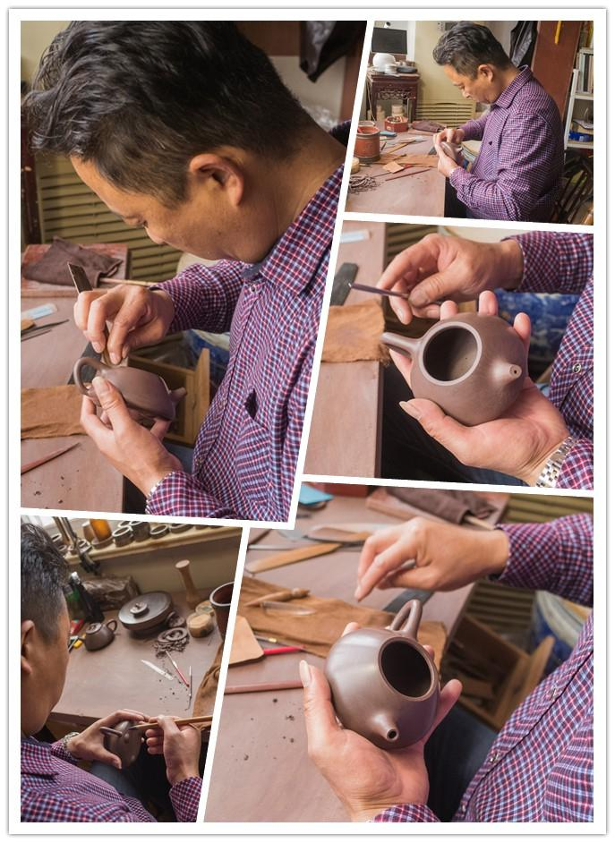
一生不追求名利，人在做，天在看，化工壶假手工壶机车壶这些损害阴德的事情我一样都不会去沾，纵使家财万贯，也是日食三餐，夜睡一张床。淡淡泊泊做事，清清白白做人，守好自己的一亩三分地，晚上睡觉也踏实。
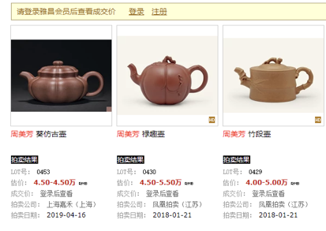
这个是我几次拍卖的壶的价格，当然，壶友在我这边收壶，肯定要比这个价格底很多，我想为壶友服务一辈子的，而且让壶友感受到超级的物超所值。
我向壶友郑重承诺：
1，我们家的壶都甄选自己家的储藏紫砂，绝无化工泥料。
2，我所做的每一把都是全手工，绝无机车壶。
3，如果发现买到假壶、化工壶、机车壶、灌浆壶，全额退款并且当场把壶砸掉
人在做，天在看，做壶如做人，有底线的壶艺人才能长长久久！我做的壶，每一把都是真正宜兴原矿紫砂泥，也许工艺有好有坏，但所用泥料请您百分之百放心，良心好泥料，做假紫砂佛祖不容！
以下是我做过的壶实拍图：
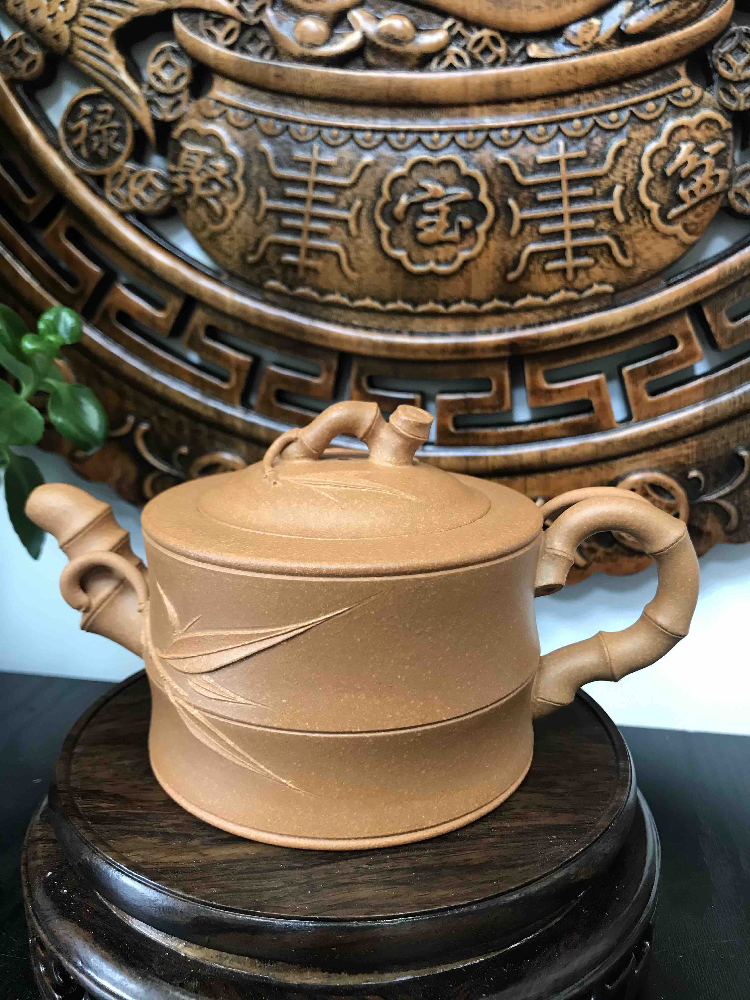
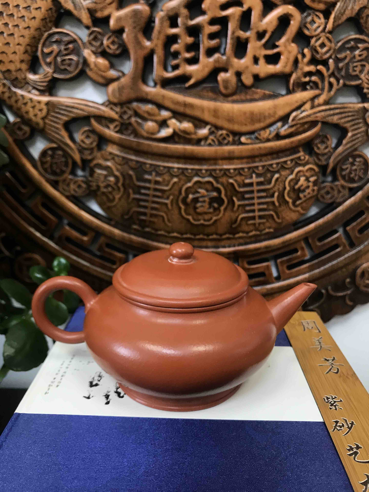
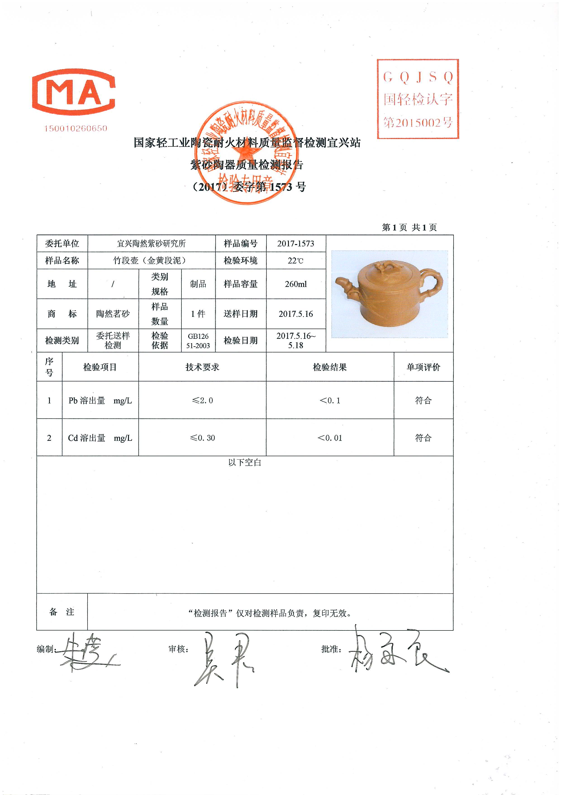
 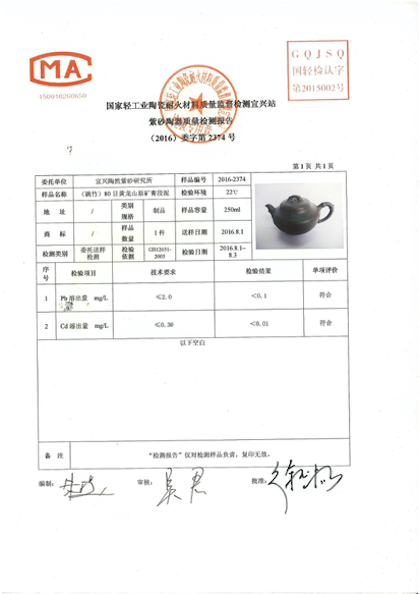
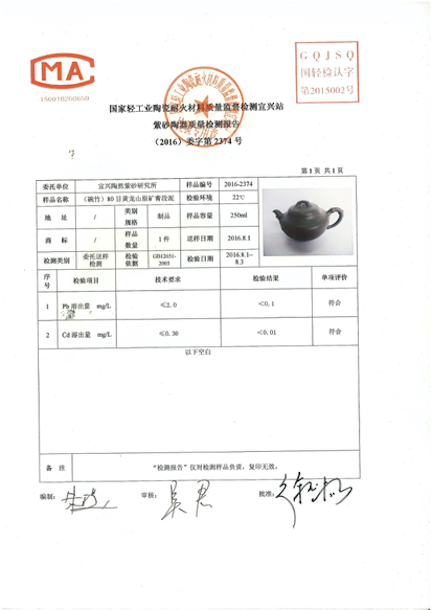
以上只是部分款式，更多新款壶型，只在微信公布！（我微信号是：YCC607）
下面我说说我对，紫砂壶开壶、养壶的一些浅谈:
现在想找一把好的紫砂壶不容易，想养一把紫砂壶更不容易。
之前在网上看到了很多养紫砂壶的攻略，什么新壶先用清水煮，再豆腐煮，再甘蔗煮......看的我很是无语，如果你的紫砂壶是没有质量问题的，你只要擦拭干净，沸水冲一下就可以用了，如果你的紫砂壶是加了料的，只要那些有添加的物质还在，就是会不断的析出相应的有害物质，你用什么煮也都没用。
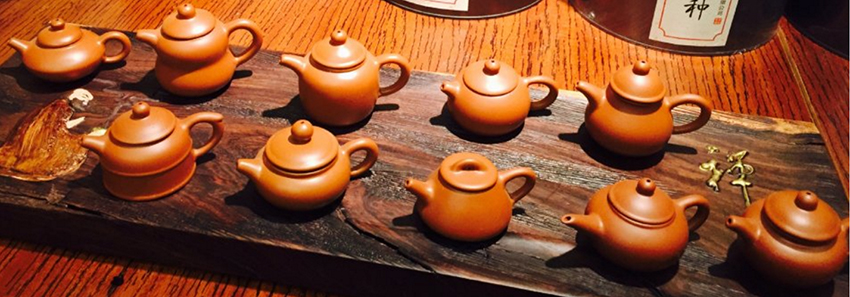
而有的人得到了一把紫砂壶，每天都要用，白茶要用，红茶要用，乌龙也要用。真正懂紫砂的人，这一把壶，只泡一种茶，甚至，不是说这壶只泡乌龙，而是这壶只泡铁观音。因为紫砂壶会吸收茶汤的滋味，在开始用的时候，甚至会觉得茶汤莫名的寡淡，其实是被壶吸去了，可是用久了，会发现，茶汤就特别的香甜，所以，真正的紫砂高手，可不是只有一个壶，他会有很多很多的壶，并且不是摆设而是日常。
还有人养壶，就不停的用纱布擦拭，是这样很快也就一个星期就壶就会有光泽，但是这也失去了养壶的意义和乐趣。我总是相信万物都是有灵的，我们养一把好壶，不仅仅是让它有光泽，让它有茶香，其实更是一种心与壶灵性的沟通，是一种养成。这样用心养成的壶，才有意义，才是情趣。
(现在偶尔会接一些私人订制的壶，就在这种自家mini型窑器里面烧制， 特别满足一些人送领导的需要，上面可以刻任意图案和字。)
最后，特别提醒一下：
上面说了，我是做紫砂壶的，很多人感觉在我这里学到了紫砂壶知识，就一定要在我这里买壶，这点你完全可以放心，我信佛，讲究随缘二字，绝对不强行强卖，我教会了你，就等于日行一善，对我自身来说，福虽未至，祸自远矣！我很乐意去做这件事！
您若对紫砂有任何问题，都可以添加我的微信（我微信号是：YCC607）
我的朋友圈不定期还有点赞赠礼等惊喜
如果你想在我这里买壶，可以通过加我微信的方式
看朋友圈紫砂壶精品，都是一物一拍
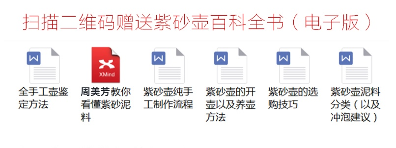